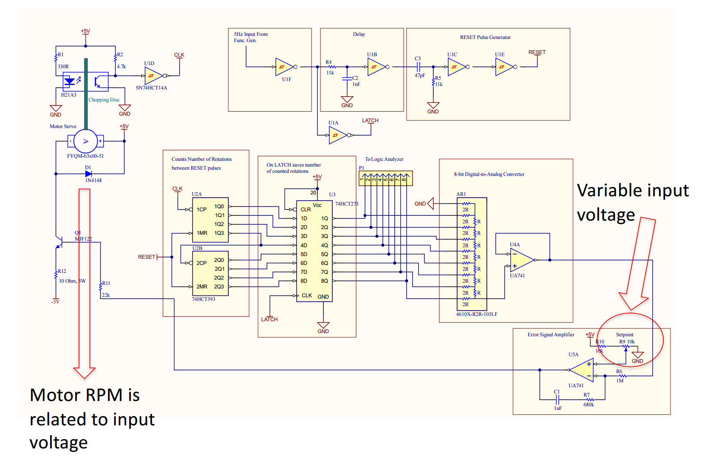
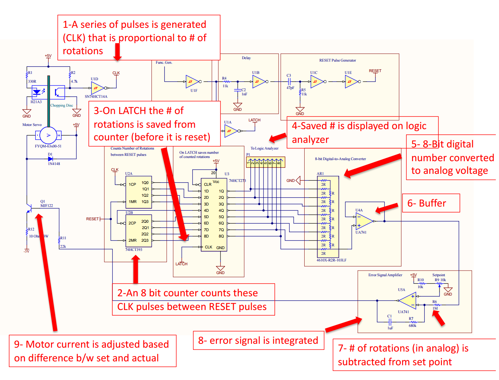
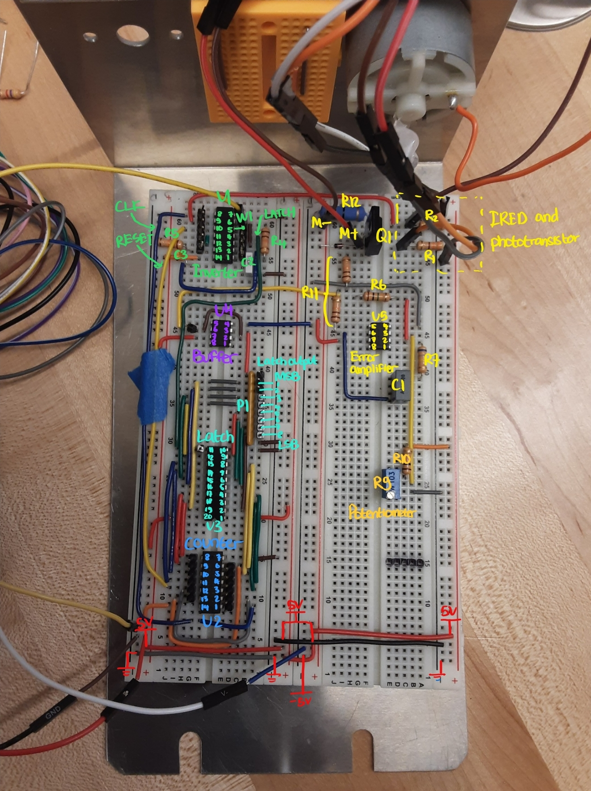

This is a servo motor controller that is designed to set the speed of a DC motor based on a potentiometer user input. Motor speed feedback is obtained through a infrared encoder which consisted of a optical chopper, IR emitter, and receiver. The circuit uses digital logic and a PI feedback loop to adjust motor RPM. No microcontrollers were used in this project.
Circuit Components
The main components of the circuit are as follows:
Motor circuit
Consist of a power transistor to drive the motor and a IR encoder to generate CLOCK pulses for motor speed feedback.
Signal generator
Generate a LATCH signal and a delayed counter RESET signal.
8-bit counter
Counts the amount of CLOCK pulses generated by the motor.
D-latch
Saves the current counter value and use it for error correction.
DAC
Converts the binary number saved by the SR latch into an analog RPM signal.
Error signal amplifier
Performs proportional and integral control based on the analog RPM signal and the user set-point.
Working Principle
The working principle of the circuit is as follows:
A signal generator creates a 5 Hz LATCH and RESET signal, where RESET is delayed to give time for the D-latch to save the counter value. This sets a baseline for the update rate of the D-latch and reset rate of the counter.
A spinning motor generates CLOCK signals via a rotating infrared encoder.
An 8-bit counter counts the number of clock pulses between RESET pulses.
The D-latch saves the number of clock pulses in binary form and relays it to the DAC. This latch acts like a buffer in between counter resets.
A DAC converts the binary clock pulses into an analog signal, and sends it to the error signal amplifier.
The error signal amplifier performs PI control based on the analog RPM signal and the user set-point, then uses the output the drive the motor MOSFET.
The MOSFET drives the motor based on the error feedback, completing the control loop.
Reflection
I learned a lot from building this circuit and had a lot of fun along the way. The design was built in modular blocks and kept as neat as possible, which made debugging much more manageable. This project also gave me hands-on experience implementing control loops without relying on an MCU.
Skills Used
Digital circuitsPID controlTroubleshooting
Servo Operation
This is a demo of the servo in operation.
When I turn the potentiometer clockwise, the speed increases, and vice versa.
Shown on the bottom right window of the screen is the RPM reading of the motor.
Shown on the top left window is the scope reading of the raw IR readings (orange) and clock pulses (blue) from the motor.
It can be seen that when the motor is spinning faster, the frequency of the clock pulses increases. Note: sorry for the messy wires, I was using an Analog Discovery 3 which had 20+ wires coming out of its terminals.
Servo controller demo
Circuit Diagram

Circuit diagram of servo motor controller (Credit: Prof. David Jones - UBC)

Annotated circuit diagram with operation details
Built Circuit

Non-annotated and annotated built circuit side by side